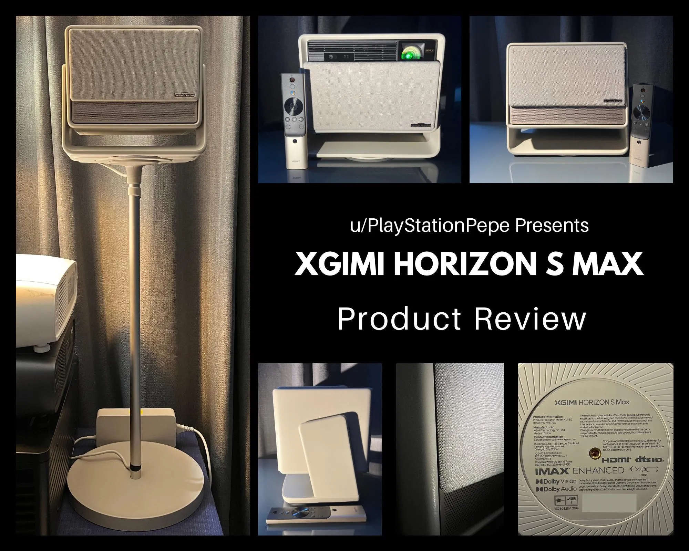

Projector Review
XGIMI Horizon S Max Projector Review
Disclosure: As an XGIMI Partner Affiliate, I earn from qualifying purchases.

Hi everyone, u/playstationpepe here reviewing the XGIMI Horizon S Max.
XGIMI has provided this projector to me for my unbiased and personal review of this unit. The contents of this review are based on my own personal experience and do not represent the views of others.
Where to buy
Key specs
- Light source: Dual Light 2.0 and Tri-Color Laser modes
- Stand: built in 360 degree turntable base with 135 degrees of vertical tilt
- Lens cover: motorized dust cover that lowers when powered on
- Picture: IMAX Enhanced, full manual picture customization, low and ultra low input lag modes
- Storage: 64GB built in with 2GB of RAM, expandable over USB
- Ports: 1 HDMI with eARC, USB ports (no Ethernet port)
- Network: built in WiFi
- Power supply: external brick, 2 lb 4 oz
Unboxing and First Impressions
This projector was shipped to me in its retail packaging, so everything I received was exactly how it would appear to anyone purchasing this model. The contents of the box include the projector and an accessory box.
The accessory box contained a Smart Voice Remote Control, two AAA batteries, power supply, power supply cord, and user guide.
When I picked up the projector, it had some weight to it. I was overall impressed with the quality design and adjustable base. I noticed that the bottom side of the projector had a 360° turntable design, which allowed me to rotate the projector in any direction. The vertical adjustment enabled me to beam straight up to the ceiling and downward towards the wall or screen surface with 135° of rotation. I felt that the range of adjustment would work for a wide range of placement.
The front side of the projector has a motorized dust cover that lowers when the unit is powered on. At first glance, you might think this was a high-end speaker instead of a projector. The fabric material looks and feels great.
Accessories
The smart voice remote has a built-in microphone for Google Assistant, a dedicated projector settings button, a dedicated auto-focus button, and directional with volume buttons. The smart remote connects to the projector wirelessly via Bluetooth. The rear side of the remote has a button to release the batteries, which eject from the bottom of the remote. Overall, the remote felt comfortable in my hand, and I was able to naturally figure out where everything was without having to check which buttons I was pressing.
The power supply, at a glance, was larger than I expected. It weighs 2 lb 4 oz. I understand that to maintain a compact size, the projector's power supply electronics need to be external. Otherwise, the projector stand would be really heavy. The projector power cord plugs into the bottom of the stand. This is a great design choice compared to plugging it directly into the projector body, as that would restrict the range of motion when rotating the unit vertically.
Powering On and First-Time Setup
When powering on the projector for the first time, I noticed how quiet the unit was. Watching the motorized dust cover lower was pretty cool to see.
The setup process for the projector was easy. I was able to connect to Wi-Fi, log into my existing Google account, and start adjusting the projector. My original projector placement was slightly off to the left side of the screen, so it was not dead center. The automatic keystone correction assisted me, requiring only a few manual adjustments. The projector had no issues maintaining razor-sharp focus the entire time.
After completing the setup menu, I started to explore the Android TV interface. My first impressions of the navigation were that it was a little on the slow side, but after updating the projector, those issues were resolved.
Image Quality
When I powered on the Horizon S Max for the first time, I was impressed by how bright the laser light source was. Earlier in the setup menu, I was presented with two options for the light source mode: Dual Light 2.0 and Tri-Color Laser. The difference between these two light sources is a matter of personal preference.
Excerpt from XGIMI's website: "Dual Light 2.0 adds a wide-spectrum light source—laser-excited fluorescence. It effectively solves the problems of speckle and color edge ginning."
I decided to utilize Dual Light 2.0 for the added benefit of reduced eyestrain.
Overall, colors out of the box looked great. I watched some demo videos that I’ve previously used on other displays, a few movies, and was overall satisfied with the standard presets available. I explored the menus further, and the projector allows for a full suite of manual customizations.
Contrast and shadow detail performance were also excellent. I wasn’t distracted by the letterboxing (black bars) in movies, and I was satisfied with how dark scenes looked as well.
IMAX Enhanced content looked great; colors were well-balanced.
Input lag: Projector has a low and ultra low input lag option (ultra low is available when no keystone is used) projector performed well with most of the games I played on it.
Sound Quality
The speakers were loud and clear for the most content that I viewed. I didn’t have to increase the volume past a quarter of the way, as it was able to fill the room with sound. Dialogue was clear.
I also enabled volume balance to help smooth transitions between loud and quiet sounds.
Optional XGIMI Stand
- XGIMI sent over a floor stand for the Horizon S Max and it was easy to assemble. Directions for assembly were printed on the inside of the box. The stand was easy to adjust.
Some Notable Mentions
- Netflix is not pre-installed on the projector. I was unable to sideload it, but using the browser allowed me to watch Netflix in 1080p.
- Built-in storage for the unit is 64GB with 2GB of RAM. Storage can be expanded via the USB ports located on the back of the unit.
- The projector only has one HDMI port, which is fine for most applications due to its portable nature. Since eARC is supported, you can run an HDMI cable to an AVR receiver for additional video switching. Audio output also supports PCM and Bypass.
- There is no built-in Ethernet port. My experience with the built-in Wi-Fi was excellent; video content and apps downloaded very quickly.
- I was unable to test 3D performance at the time of writing this review. I will update my review once I order a pair of RF 3D glasses.
Based on my experience with this projector, I would personally recommend it to others. For an all-around portable or even permanent fixed setup, consider the XGIMI Horizon S Max as an excellent contender in your projector selection process.
Where to buy
Disclosure: As an XGIMI Partner Affiliate, I earn from qualifying purchases.
For more info or questions about this projector, or help picking one for your room, book a consultation or contact me and I'd be happy to offer some suggestions.
This review was first posted in r/BudgetProjectors.